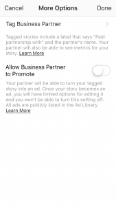

If you’ve ever wondered how to add a link to your Instagram story, you’re not alone. Did you know that Instagram stories have increased the amount of time people spend on Instagram by about ten minutes?That means people are spending ten more minutes with their total attention devoted to Instagram stories. For advertisers and influencers, those are great statistics – but they don’t translate if you can’t direct that traffic anywhere.
Adding links to your Instagram story is a great way to make your other ventures easily accessible right from your own page. They let you keep your followers’ attention, and they’re an easy tool for collaboration too. If you aren’t already using Instagram story links, now’s the time to start. Read on to find out how to add links to your Instagram story!
Why Add Links to Your Instagram Story?
Instagram users love Instagram stories. They’re wildly popular, and a lot of people report preferring watching stories over scrolling through the app itself. Adding links to your Instagram story means that you have your followers’ attention, and in our world of eternal choice, that’s seriously saying something. When everyone is competing for an Instagram user’s attention, if you can keep it, you’ve basically struck gold.

If you can get someone to click over from your Instagram story to your website or the website of a brand partnership, then you’ve already done more than most. You make it easier for your followers to find whatever you’re promoting on your Instagram that way, too. People may not take the time to seek out a page from elsewhere on the Internet, but they very well may follow your link.
Using Instagram story links is also a great way to announce brand partnerships without being too in-your-face about it. It’s in direct compliance with Instagram’s guidelines, and the branding is pretty subtle. Using an Instagram story link lets you promote your own account and your business partner’s at the same time. It’s a great business tool – but it does come with a few restrictions.
Using Instagram Story Links to Create Shoppable Content
If you follow any of your favorite brands on Instagram, chances are you’ve seen a post with a “swipe up” link that takes you directly to a product page. If you’re selling a product, using a story link to take your followers directly to the transaction page is invaluable. Instagram story links aren’t just great for brands, they’re great for Instagram business.
Creating a shoppable feed and making money on Instagram are another matter, but using story links makes it infinitely easier to connect product launches to pre-existing influencer pages on Instagram. If you are selling a product on Instagram and you aren’t already using Instagram story links, now is definitely the time to start. Let’s take a look at exactly what it takes to add a link to your Instagram story:
Requirements for Adding Links to Your Instagram Story
Adding branded content isn’t available to just anyone, however. Although it may seem unfair, Instagram has to be able to screen who’s using legitimate business practices and who’s just trying to abuse the system. Therefore, to be able to use the “Swipe up” link feature, you will need either to be verified on Instagram or to have more than 10,000 followers.
If you have less than 10,000 followers, you only have one place to share a link on your Instagram profile – and that’s in your bio. Don’t worry too much, though. If you have multiple businesses or pages you’d like to advertise, there are options like Linktree that can help you. Linktree allows you to link to as many pages as you would like, and many people who do have more than 10,000 followers still use it today. You can also use bit.ly or tinyurl, which are tried and true methods of condensing links on the internet.
But if you’re verified, keep reading to find out how to use that Swipe Up link….
This Is How to Add a Link to Instagram Stories
To a website:
- Take a photo and upload it to your story
- Click the “chain” icon on the top of the page
- Click whatever you’d like to link – IGTV or +URL for a webpage.
- Enter the URL of the Page you’d like to link

To a brand’s page:
- Take a photo and upload it to your story.
- Click the “chain” icon on the top of the page.
- Click “Tag business partner” and/or “Allow Business partner to promote”
- Wait for business partner’s permission
- Post to your story!
Checklist for Swiping Up
So, let’s review….if you’re verified or you have more than 10,000 followers you can use a swipe up Instagram story link without consequence But what if you’re not verified? Or you’re posting branded content and you’re under the official follower count? Even if you just want to promote your own page, you want your followers to follow you to other places you’re present on the internet.
 The trick is in getting followers to click through to your (or someone else’s) profile. We promise it’s not impossible, even without being verified. So how do you do that without a swipe up link? In this case, it’s time to get creative and begin utilizing your Instagram mentions. The mention is the unsung hero of the attention-grabbing business on Instagram. A mention isn’t technically a link in the traditional sense, but it does lead followers away from your page directly to a profile where the first thing they might see is a link.
The trick is in getting followers to click through to your (or someone else’s) profile. We promise it’s not impossible, even without being verified. So how do you do that without a swipe up link? In this case, it’s time to get creative and begin utilizing your Instagram mentions. The mention is the unsung hero of the attention-grabbing business on Instagram. A mention isn’t technically a link in the traditional sense, but it does lead followers away from your page directly to a profile where the first thing they might see is a link.
If you’re doing a branded partnership or you want to promote your own work but you can’t add the swipe up link, mention the brand in a story and add text that reads along the lines of “Click here for the link”.
This is a much easier way to add links to your Instagram story – and chances are, your followers have already seen it! We’ve all seen the “link in bio“, so using a mention isn’t too far off from what people are used to. Instagram users want to share links all the time, and methods already exist, we just have to get a little creative.
Adding Links to Your Instagram Story Is Easy and Useful
Adding links to your Instagram story is a great way to keep your followers engaged. It’s also helpful when it comes to working with brands and even promoting your own business. Adding links to your Instagram story means you’re keeping your follower’s attention and converting it into loyalty. Whether you’re creating a shoppable feed or you just want to share something, this is one Instagram feature that holds up.
While there are requirements to use the official Swipe Up story link feature, don’t let that discourage you until you get there. Even though you need to have 10,000 followers or be verified to use the official “Swipe Up” link feature, there are ways to get around it if you want to promote your products. Make use of linking services in your bio or get creative with the way you use your Instagram story mentions. Using Instagram story links is a fantastic tool for every Instagram user – not just the verified ones. Links for one, links for all.